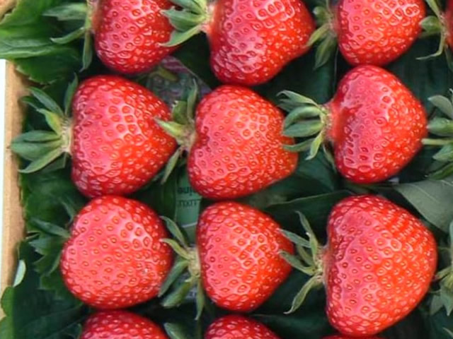

Ренессанс – новинка 2019 г от немецких
селекционеров HANSABRED GMBH&CO KG, GERMANY.
По срокам созревания относится к среднеранним
– созревание на 2 дня позже Эльсанты.
Кусты среднего размера, густооблиственные, компактные, слабораскидистые. Цветоносы расположены ниже уровня листьев, склоняются к земле. Цветы богаты пыльцой, поэтому «корявая» ягода практически не встречается. Усообразовательная способность умеренная. Чашелистики крупные, направлены от плода вверх, что облегчает процесс подготовки урожая к переработке.
Плоды в форме сердца, однородные по размеру, ярко-красного цвета с глянцем. Средняя масса около 20 г. Вкус очень приятный – сладкий с ярко-выраженным ароматом, за счет высокого содержания ароматических веществ. Мякоть плотная, кожица средней упругости. Семянки желтого цвета утоплены в мякоть.
Высокие показатели лежкости и транспортабельности позволяют говорить о востребованности сорта среди фермеров и садоводов, выращивающих ягоду на продажу. Аромат Ренессанс уникальный – присущ только диким видам земляники